PostFX Color Correction
Required Knowledge
- You need to be familiar with Torque 3D. Specifically loading a level for game play, taking an in game screen shot and locating the screen shot file location for editing, saving, and loading.
- You need to have a basic understanding of Adobe Photoshop or another image editing software package.
Color Correction
Color Correction is a powerful new tool to help fine tune the overall color temperature in a Torque 3D scene. These adjustments are performed in an image editing program such as Photoshop that allows for individual channel (R, G, B ) tuning. Interesting variants can easily be achieved for a scene with some simple steps.
Workflow
- Load a level in Torque 3D. Generally it is good practice to be fairly far along in the lighting of the scene since the curves and their adjustments will be based on screen captures from the level. For this example; we will use Chinatown_Dusk.
- Press the Play Game icon on the top shelf.
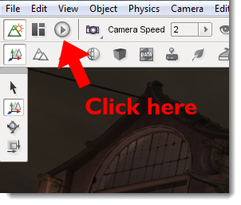
- Find an area in your level that represents the overall lighting scheme well.
- Take a screen grab by pressing ( Ctrl + P ).
- Torque will save a file with the naming format screenshot_####.png in your game folder for the level.
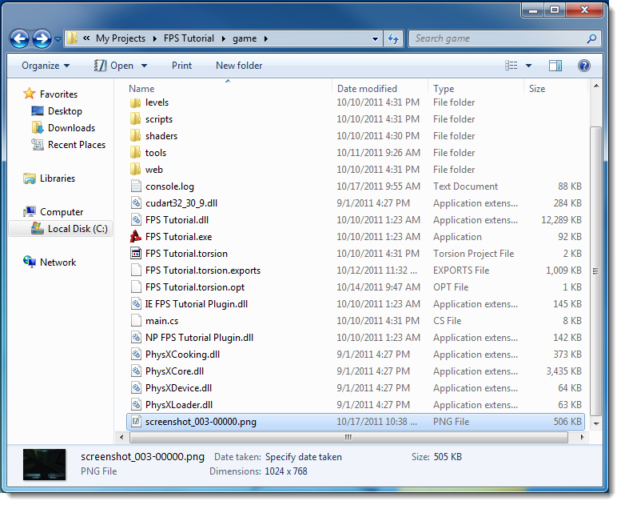
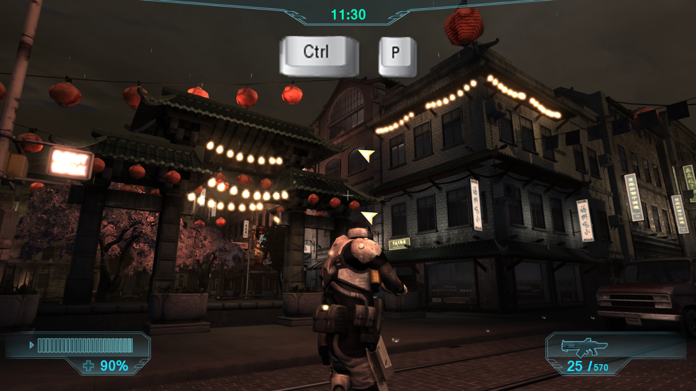
- Load Photoshop or the image editing software of your choice that allows for RGB channel modification.
** For the rest of this document, all references will be made to the workflow in Photoshop.
- Load the screenshot of the level into Photoshop .
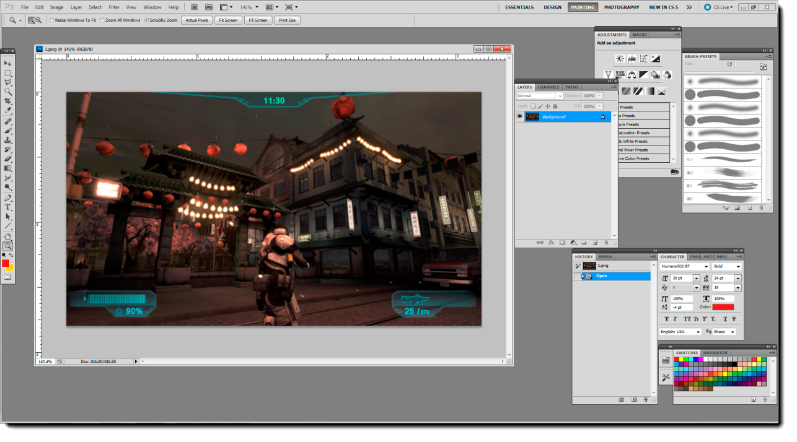
- Locate the following file from the Torque 3D install folders :
\game\core\scripts\client\postFx\null_color_ramp.png
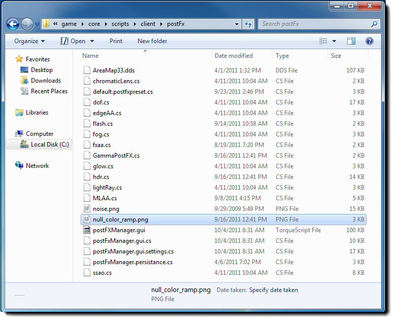
** Note: this is a 256 X 1 pixel image that is perfectly tuned.
Pixel 0 = 0,0,0 128 = 128,128,128 255 = 255,255,255
- Add the null color ramp to the screenshot as a layer:

- Add an adjustment layer - Curves.
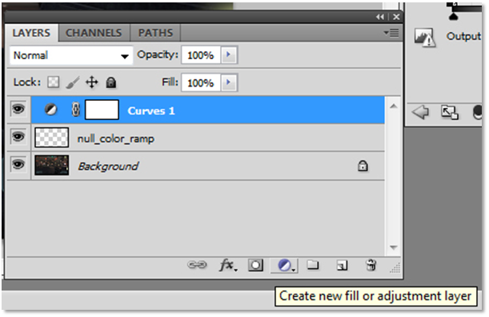
- Use the curves adjustment layer interface to tweak the values for each RGB Channel. As you can see, slight adjustments go a long way in altering the overall look of the screenshot.
Since the adjustment layer is the top layer, the null color ramp is also being affected.
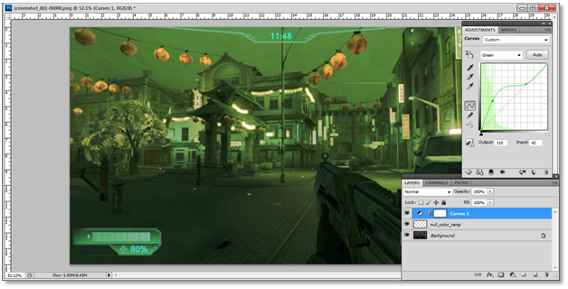
- When you are satisfied with the image; You may elect to save a .PSD file to save to your layered file.
- Select the adjustment layer and the null_color_ramp layer by CTRL + clicking each layer in the Layers tab and then merge the two layers by pressing
CTRL +E.
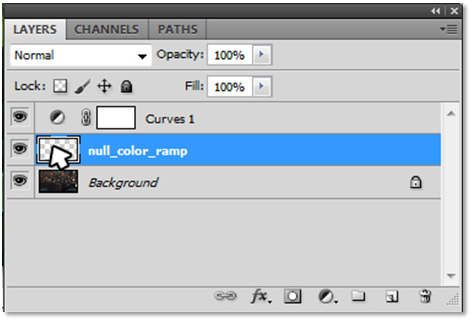
- Notice that the Null_color_Ramp is no longer a perfect grey gradient, but it now contains the adjustment made with the RGB Layer. Select the new layer with a
CTRL + left click into the
layers interface window where the image is displayed. This will select the gradient bar.
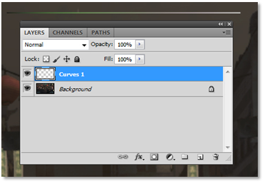
- In Photoshop go to File – New. The size should be 256 X 1. Click
OK.
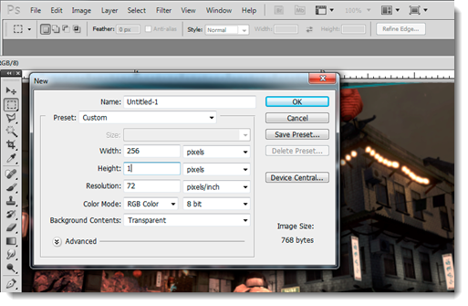
- Select the new blank image file and paste the adjusted gradient ramp into it by pressing CTRL + P.
- Save the image file into your working level file in Torque 3D with a naming convention of your choosing.
- Go back to Torque 3D and load the level file.
- In Torque 3D, go to Edit – PostEffect Manager – Color Correction.
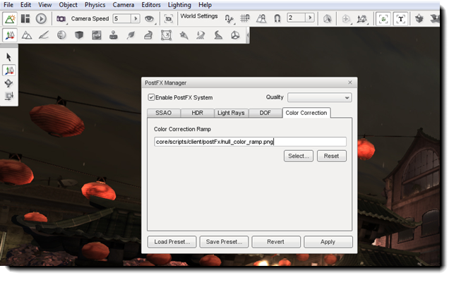
- Click on Select… and browse to the folder where you placed the new gradient ramp and select it. Immediately the scene changes and should match the changes made in Photoshop.
- Click on Save Preset… to accept the color changes. Proper naming convention must be followed when saving settings from the PostFX Manager; otherwise the PostFX settings will not load the next time the level is loaded into Torque 3D.. The naming convention to follow is: levelname_postfxpreset.cs.
- Done.
Examples with RGB gradient changes:
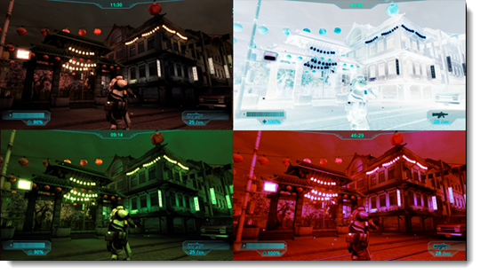